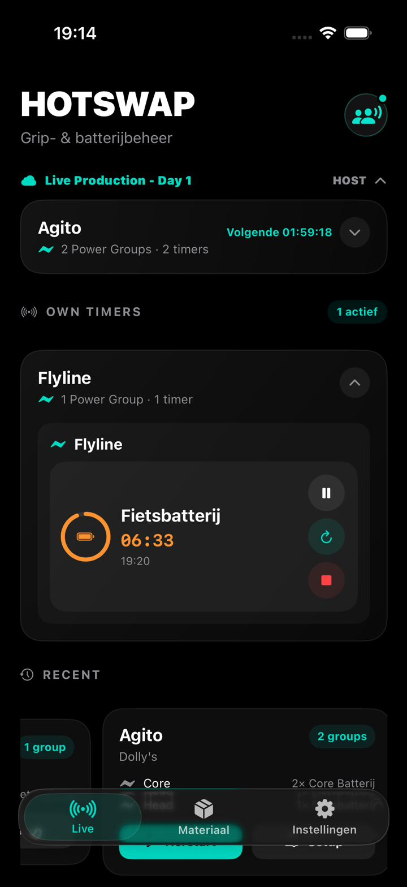
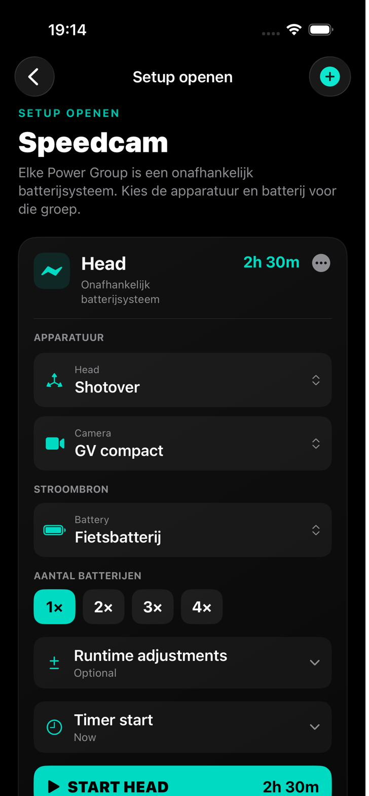
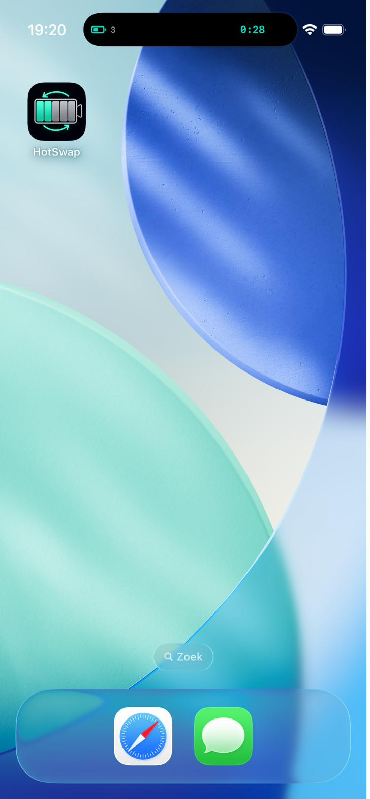
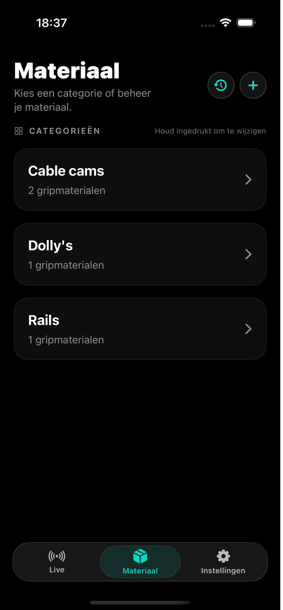
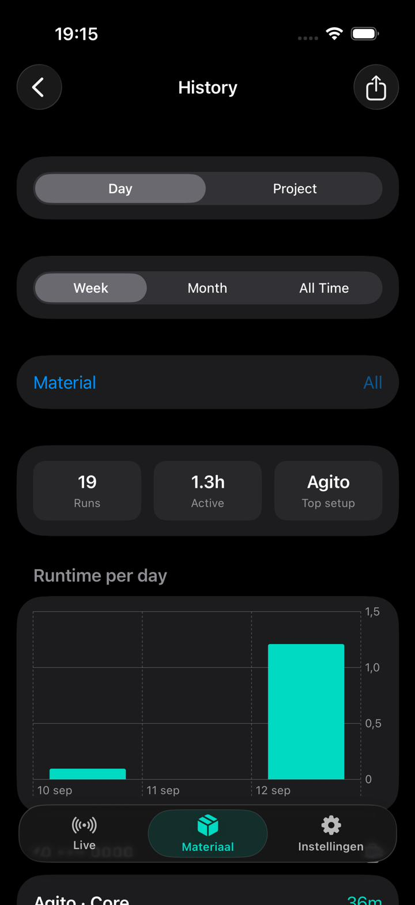

Zo ziet HotSwap eruit op set.
Screenshots uit de app: live batterijtracking, Shared Sessions, setup builder, geschiedenis en zichtbaarheid op het lockscreen.
Live overzicht
Volg meerdere Power Groups en timers in één gedeeld productieoverzicht — per apparaat, per batterij, in real time.

Eigen + gedeelde timers
Houd je persoonlijke timers apart terwijl je toch de live crew-sessie blijft volgen — inclusief recente setups binnen handbereik.

Setups bouwen
Stel gedetailleerde Power Group-setups samen met apparatuur, batterijen en optionele runtime-aanpassingen — van head tot camera tot voeding.

Deel met je crew
Start een Shared Session en nodig crewleden uit via code, link of QR. Jij bepaalt wie kan meekijken en wie mag bedienen.
Live Activities
Zie de eerstvolgende batterij-deadline meteen op het lockscreen, zonder de app te hoeven openen.

Dynamic Island
Houd de actieve timer zichtbaar terwijl je je iPhone gebruikt voor iets anders — nooit een swap-moment missen.

Materiaalbibliotheek
Organiseer gripcategorieën als cable cams, dolly's en rails, zodat je setups snel herbruikbaar blijven.

Geschiedenis
Bekijk runtime-geschiedenis en gebruiksstatistieken per materiaal, per dag, week, maand of all-time.